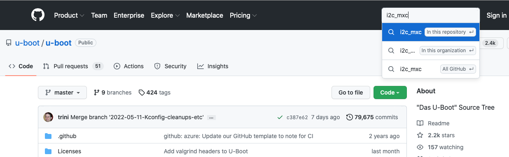
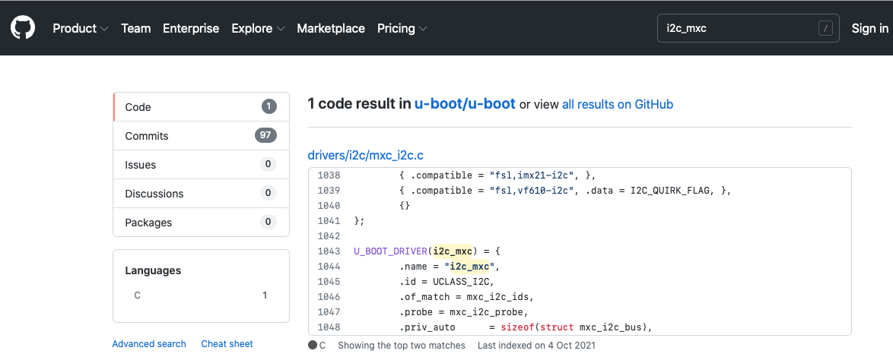

Library Extension - New Driver Worked Example
A helpful way to show the process of adding a driver is to work through an example step-by-step. The I2C driver is relatively straightforward and can be readily tested on the MaaXBoard as there is a power management IC (BD71837MWV) already installed on the board's I2C bus. In this worked example, we shall not go as far as installing a driver for the BD71837MWV device itself, but we can probe the I2C bus, identify the address of the BD71837MWV device, and perform a sample memory read.
Establishing the driver
The first place to look is the relevant source code for the driver in U-Boot. This file may be identified as follows.
A dm tree command from the U-Boot prompt1 should reveal an i2c entry, which uses driver i2c_mxc.
Class Index Probed Driver Name
-----------------------------------------------------------
...
i2c 0 [ ] i2c_mxc | |-- i2c@30a20000
i2c 1 [ ] i2c_mxc | |-- i2c@30a30000
If the MaaXBoard is powered on and autoboot is interrupted (e.g. press the Enter key during the countdown shown in line 37 of the output in the First Boot section), then the dm tree command may be entered at the U-Boot prompt.
A search for i2c_mxc within U-Boot's github repository https://github.com/u-boot/u-boot reveals the relevant file to be uboot/drivers/i2c/mxc_i2c.c:


This file is in the equivalent location within our libubootdrivers library, at projects_libs/libubootdrivers/uboot/drivers/i2c/mxc_i2c.c.
In the code snippet from the screenshot above, we can see that the driver relies on the UCLASS_I2C uclass. This is provided by the file i2c-uclass.c in the same directory. At the end of i2c-uclass.c, we can see that driver and the other relevant drivers:
UCLASS_DRIVER(i2c) = {
.id = UCLASS_I2C,
.name = "i2c",
...
UCLASS_DRIVER(i2c_generic) = {
.id = UCLASS_I2C_GENERIC,
.name = "i2c_generic",
...
U_BOOT_DRIVER(i2c_generic_chip_drv) = {
.name = "i2c_generic_chip_drv",
.id = UCLASS_I2C_GENERIC,
...
This provides the driver references that we need to add to libubootdrivers via projects_libs/libubootdrivers/include/plat/maaxboard/plat_driver_data.h:
/* Define the uclass drivers to be used on this platform */
...
extern struct uclass_driver _u_boot_uclass_driver__i2c;
extern struct uclass_driver _u_boot_uclass_driver__i2c_generic;
/* Define the drivers to be used on this platform */
...
extern struct driver _u_boot_driver__i2c_mxc;
extern struct driver _u_boot_driver__i2c_generic_chip_drv;
...
and projects_libs/libubootdrivers/src/plat/maaxboard/plat_driver_data.c:
void initialise_driver_data(void) {
...
driver_data.uclass_driver_array[17] = _u_boot_uclass_driver__i2c;
driver_data.uclass_driver_array[18] = _u_boot_uclass_driver__i2c_generic;
...
driver_data.driver_array[19] = _u_boot_driver__i2c_mxc;
driver_data.driver_array[20] = _u_boot_driver__i2c_generic_chip_drv;
...
We can see that the latter change has added to the arrays. In this example, the two arrays had previously extended to elements [16] and [18] respectively. The increased sizes need to be reflected back in libubootdrivers/include/plat/maaxboard/plat_driver_data.h by increasing the size counts:
/* Define the number of different driver elements to be used on this platform */
#define _u_boot_uclass_driver_count 19 // In this example previous count was 17, so +2
#define _u_boot_driver_count 21 // In this example previous count was 19, so +2
...
In order to build the new driver files, we need to add them to the libubootdrivers/CMakeLists.txt makefile.
There are also some U-Boot configuration macros relevant to I2C that are needed, which are also set within the makefile. In this example, we can use the guidance in the Library Extension - New Driver section, and refer to the .config file created during the Building U-Boot for the MaaXBoard appendix. Using the suggested directory name from that appendix, the filepath would be: maaxboard_dockerimage/maaxboard-uboot-build/maaxboard-uboot/uboot-imx/.config.
Extracting I2C-related items (e.g. using grep -i I2C .config), we would see:
CONFIG_SYS_I2C_MXC_I2C1=y
CONFIG_SYS_I2C_MXC_I2C2=y
CONFIG_SYS_I2C_MXC_I2C3=y
# CONFIG_SYS_I2C_MXC_I2C4 is not set
CONFIG_SPL_I2C_SUPPORT=y
CONFIG_CMD_I2C=y
# I2C support
CONFIG_DM_I2C=y
# CONFIG_I2C_SET_DEFAULT_BUS_NUM is not set
# CONFIG_DM_I2C_GPIO is not set
# CONFIG_SYS_I2C_IPROC is not set
# CONFIG_SYS_I2C_FSL is not set
# CONFIG_SYS_I2C_CADENCE is not set
# CONFIG_SYS_I2C_DW is not set
# CONFIG_SYS_I2C_INTEL is not set
# CONFIG_SYS_I2C_IMX_LPI2C is not set
# CONFIG_SYS_I2C_IMX_VIRT_I2C is not set
CONFIG_SYS_I2C_MXC=y
# CONFIG_SYS_I2C_MXC_I2C5 is not set
# CONFIG_SYS_I2C_MXC_I2C6 is not set
# CONFIG_SYS_I2C_MXC_I2C7 is not set
# CONFIG_SYS_I2C_MXC_I2C8 is not set
CONFIG_SYS_MXC_I2C1_SPEED=100000
CONFIG_SYS_MXC_I2C1_SLAVE=0
CONFIG_SYS_MXC_I2C2_SPEED=100000
CONFIG_SYS_MXC_I2C2_SLAVE=0
CONFIG_SYS_MXC_I2C3_SPEED=100000
CONFIG_SYS_MXC_I2C3_SLAVE=0
# CONFIG_SYS_I2C_NEXELL is not set
# CONFIG_SYS_I2C_OCORES is not set
# CONFIG_SYS_I2C_ROCKCHIP is not set
# CONFIG_SYS_I2C_MVTWSI is not set
# CONFIG_SYS_I2C_XILINX_XIIC is not set
# CONFIG_SYS_I2C_IHS is not set
# CONFIG_I2C_MUX is not set
# CONFIG_I2C_EDID is not set
Removing (most of) the commented items and reordering slightly leaves:
CONFIG_CMD_I2C=y
CONFIG_DM_I2C=y
CONFIG_SYS_I2C_MXC=y
CONFIG_SYS_I2C_MXC_I2C1=y
CONFIG_SYS_I2C_MXC_I2C2=y
CONFIG_SYS_I2C_MXC_I2C3=y
CONFIG_SYS_MXC_I2C1_SPEED=100000
CONFIG_SYS_MXC_I2C1_SLAVE=0
CONFIG_SYS_MXC_I2C2_SPEED=100000
CONFIG_SYS_MXC_I2C2_SLAVE=0
CONFIG_SYS_MXC_I2C3_SPEED=100000
CONFIG_SYS_MXC_I2C3_SLAVE=0
# CONFIG_SYS_I2C_MXC_I2C4 is not set
CONFIG_SPL_I2C_SUPPORT=y
This is an excellent starting point and may well be complete; however, we may still need to apply some reasoning. For example, we do not need the final item (although it would do no harm), as SPL is only used when compiling the secondary bootloader and CONFIG_SPL_I2C_SUPPORT does not appear in our U-Boot code. The penultimate item concerning I2C4 (currently commented) is inaccurate and is an omission from this maaxboard-uboot/uboot-imx build. Examining the DTS file maaxboard.dts confirms that there are four I2C buses, so we will include a set of I2C4 macros. Note that, although inconsistent, it is not an issue that these macros use I2C1-I2C4 labels, whereas the DTS labels them 0-3. Our convention, such as in the following CAmkES section, will be to use 0-3 labels.
Combining the previous paragraphs, we update the libubootdrivers/CMakeLists.txt makefile as follows (showing only extracts relevant to I2C).
The i2c_driver variable, which by default is "none", is set to "i2c_mxc":
# Set up the applicable drivers and platform dependent configuration.
if(KernelPlatImx8mq)
...
# Define the drivers used for this platform
...
set(i2c_driver "i2c_mxc")
...
Then a new section is added to handle this:
...
############################
# Settings for I2C drivers #
############################
if(i2c_driver MATCHES "none")
# Nothing to do
else()
# Enable I2C support
add_definitions("-DCONFIG_DM_I2C=1")
# Generic I2C source files
list(APPEND uboot_deps uboot/drivers/i2c/i2c-uclass.c)
# Driver specific settings / files
if(i2c_driver MATCHES "i2c_mxc")
add_definitions("-DCONFIG_SYS_I2C_MXC=1")
add_definitions("-DCONFIG_SYS_I2C_MXC_I2C1=1")
add_definitions("-DCONFIG_SYS_I2C_MXC_I2C2=1")
add_definitions("-DCONFIG_SYS_I2C_MXC_I2C3=1")
add_definitions("-DCONFIG_SYS_I2C_MXC_I2C4=1")
add_definitions("-DCONFIG_SYS_MXC_I2C1_SPEED=100000")
add_definitions("-DCONFIG_SYS_MXC_I2C1_SLAVE=0")
add_definitions("-DCONFIG_SYS_MXC_I2C2_SPEED=100000")
add_definitions("-DCONFIG_SYS_MXC_I2C2_SLAVE=0")
add_definitions("-DCONFIG_SYS_MXC_I2C3_SPEED=100000")
add_definitions("-DCONFIG_SYS_MXC_I2C3_SLAVE=0")
add_definitions("-DCONFIG_SYS_MXC_I2C4_SPEED=100000")
add_definitions("-DCONFIG_SYS_MXC_I2C4_SLAVE=0")
list(APPEND uboot_deps uboot/drivers/i2c/mxc_i2c.c)
else()
message(FATAL_ERROR "Unrecognised I2C driver. Aborting.")
endif()
endif()
The list(APPEND uboot_deps ...) lines add the driver files that were identified earlier, ensuring that they are picked out from the rest of the files held in the libubootdrivers/uboot directory and compiled. When they are compiled, they will require extra header files, but those will be picked up automatically from the uboot directory.
The add_definitions lines establish the configuration macros. Note that CONFIG_CMD_I2C, which was in our previous list of candidates, has been excluded, but only until we discuss it further in the forthcoming API section.
After these changes, within our build directory, init_build followed by ninja should result in a clean build.
Integrating the driver with CAmkES
We have established the underlying driver code, but it is not yet integrated within the CAmkES component that we shall be using. Assuming that we use the uboot-driver-example test application introduced earlier – see Using the U-Boot Driver Library – we need to modify the file camkes/apps/uboot-driver-example/include/plat/maaxboard/platform_devices.h as follows.
Firstly, we need to add path definitions so that the devices can be located in the device tree:
#define REG_I2C_0_PATH "/soc@0/bus@30800000/i2c@30a20000"
#define REG_I2C_1_PATH "/soc@0/bus@30800000/i2c@30a30000"
#define REG_I2C_2_PATH "/soc@0/bus@30800000/i2c@30a40000"
#define REG_I2C_3_PATH "/soc@0/bus@30800000/i2c@30a50000"
...
#define DEV_I2C_0_PATH REG_I2C_0_PATH
#define DEV_I2C_1_PATH REG_I2C_1_PATH
#define DEV_I2C_2_PATH REG_I2C_2_PATH
#define DEV_I2C_3_PATH REG_I2C_3_PATH
These need to be added to DEV_PATHS and DEV_PATH_COUNT should be modified accordingly:
#define DEV_PATH_COUNT 19 // In this example previous size was 15 so +4
#define DEV_PATHS { \
... \
DEV_I2C_0_PATH, \
DEV_I2C_1_PATH, \
DEV_I2C_2_PATH, \
DEV_I2C_3_PATH, \
...
};
Entries for the devices need to be added to HARDWARE_INTERFACES:
#define HARDWARE_INTERFACES \
... \
consumes Dummy i2c_0; \
consumes Dummy i2c_1; \
consumes Dummy i2c_2; \
consumes Dummy i2c_3; \
... \
emits Dummy dummy_source;
And also added to HARDWARE_COMPOSITION:
#define HARDWARE_COMPOSITION \
... \
connection seL4DTBHardware i2c_0_conn(from dummy_source, to i2c_0); \
connection seL4DTBHardware i2c_1_conn(from dummy_source, to i2c_1); \
connection seL4DTBHardware i2c_2_conn(from dummy_source, to i2c_2); \
connection seL4DTBHardware i2c_3_conn(from dummy_source, to i2c_3); \
...
And also added to HARDWARE_CONFIGURATION:
#define HARDWARE_CONFIGURATION \
... \
i2c_0.dtb = dtb({ "path" : REG_I2C_0_PATH }); \
i2c_1.dtb = dtb({ "path" : REG_I2C_1_PATH }); \
i2c_2.dtb = dtb({ "path" : REG_I2C_2_PATH }); \
i2c_3.dtb = dtb({ "path" : REG_I2C_3_PATH }); \
...
Establishing the driver API
We now need to work on the driver's API. We are going to access the driver via the U-Boot i2c command, such as is available at the U-Boot command line:
u-boot=> i2c
i2c - I2C sub-system
Usage:
i2c bus [muxtype:muxaddr:muxchannel] - show I2C bus info
i2c crc32 chip address[.0, .1, .2] count - compute CRC32 checksum
i2c dev [dev] - show or set current I2C bus
i2c loop chip address[.0, .1, .2] [# of objects] - looping read of device
i2c md chip address[.0, .1, .2] [# of objects] - read from I2C device
i2c mm chip address[.0, .1, .2] - write to I2C device (auto-incrementing)
i2c mw chip address[.0, .1, .2] value [count] - write to I2C device (fill)
i2c nm chip address[.0, .1, .2] - write to I2C device (constant address)
i2c probe [address] - test for and show device(s) on the I2C bus
i2c read chip address[.0, .1, .2] length memaddress - read to memory
i2c write memaddress chip address[.0, .1, .2] length [-s] - write memory
to I2C; the -s option selects bulk write in a single transaction
i2c flags chip [flags] - set or get chip flags
i2c olen chip [offset_length] - set or get chip offset length
i2c reset - re-init the I2C Controller
i2c speed [speed] - show or set I2C bus speed
u-boot=>
We return to libubootdrivers/src/plat/maaxboard/plat_driver_data.c to add a new entry to the cmd_array:
void initialise_driver_data(void) {
...
driver_data.cmd_array[16] = _u_boot_cmd__i2c;
...
Corresponding changes are made in libubootdrivers/include/plat/maaxboard/plat_driver_data.h:
/* Define the number of different driver elements to be used on this platform */
...
#define _u_boot_cmd_count 17 // In this example previous count was 16, so +1
...
/* Define the u-boot commands to be used on this platform */
...
extern struct cmd_tbl _u_boot_cmd__i2c;
...
We need to pull in the U-Boot source code for the i2c command from the file i2c.c (projects_libs/libubootdrivers/uboot/cmd/i2c.c).
As with the previous addition of .c files, this needs to be added to the libubootdrivers/CMakeLists.txt makefile, along with the CMD configuration macro that we identified earlier. The previous extract from the makefile is repeated below, with two additional lines marked.
############################
# Settings for I2C drivers #
############################
if(i2c_driver MATCHES "none")
# Nothing to do
else()
# Enable I2C support
+ add_definitions("-DCONFIG_CMD_I2C=1")
add_definitions("-DCONFIG_DM_I2C=1")
# Generic I2C source files
+ list(APPEND uboot_deps uboot/cmd/i2c.c)
list(APPEND uboot_deps uboot/drivers/i2c/i2c-uclass.c)
# Driver specific settings / files
if(i2c_driver MATCHES "i2c_mxc")
add_definitions("-DCONFIG_SYS_I2C_MXC=1")
add_definitions("-DCONFIG_SYS_I2C_MXC_I2C1=1")
add_definitions("-DCONFIG_SYS_I2C_MXC_I2C2=1")
add_definitions("-DCONFIG_SYS_I2C_MXC_I2C3=1")
add_definitions("-DCONFIG_SYS_I2C_MXC_I2C4=1")
add_definitions("-DCONFIG_SYS_MXC_I2C1_SPEED=100000")
add_definitions("-DCONFIG_SYS_MXC_I2C1_SLAVE=0")
add_definitions("-DCONFIG_SYS_MXC_I2C2_SPEED=100000")
add_definitions("-DCONFIG_SYS_MXC_I2C2_SLAVE=0")
add_definitions("-DCONFIG_SYS_MXC_I2C3_SPEED=100000")
add_definitions("-DCONFIG_SYS_MXC_I2C3_SLAVE=0")
add_definitions("-DCONFIG_SYS_MXC_I2C4_SPEED=100000")
add_definitions("-DCONFIG_SYS_MXC_I2C4_SLAVE=0")
list(APPEND uboot_deps uboot/drivers/i2c/mxc_i2c.c)
else()
message(FATAL_ERROR "Unrecognised I2C driver. Aborting.")
endif()
endif()
Within our build directory, after init_build and ninja, this should build successfully.
Testing the driver
Now that we have the I2C driver and its API, we can call i2c commands from our test application. For example, the following lines can be used within a CAmkES component (in our example, these would be added to file camkes/apps/uboot-driver-example/components/Test/src/test.c):
// I2C test
run_uboot_command("i2c dev 0"); // Set current i2c bus to zero
run_uboot_command("i2c probe"); // Probe i2c bus 0
On the MaaXBoard, the i2c probe command returns Valid chip addresses: 4B, which is the address of the BD71837MWV power management IC on the bus. Extending the test case as follows:
// I2C test
run_uboot_command("i2c dev 0"); // Set current i2c bus to zero
run_uboot_command("i2c probe"); // Probe i2c bus 0
run_uboot_command("i2c md 0x4b 0x0.1 0x20"); // Read 32 bytes from device at address 0x4b
run_uboot_command("dm tree");
will read the first 32 bytes from the BD71837MWV, displaying:
0000: a3 04 03 a2 00 40 40 44 44 00 00 00 00 14 14 14 .....@@DD.......
0010: 1e 14 1e 1e 02 03 03 28 03 00 00 00 00 00 0f 48 .......(.......H
Before the i2c probe, a dm tree command would reveal the presence of the i2c_mxc driver:
Class Index Probed Driver Name
-----------------------------------------------------------
...
i2c 0 [ ] i2c_mxc | | |-- i2c@30a20000
i2c 1 [ ] i2c_mxc | | |-- i2c@30a30000
i2c 2 [ ] i2c_mxc | | |-- i2c@30a40000
i2c 3 [ ] i2c_mxc | | |-- i2c@30a50000
Following the i2c probe, the dm tree command shows the instantiation of the i2c_generic_chip_drv driver that we ported earlier:
Class Index Probed Driver Name
-----------------------------------------------------------
...
i2c 0 [ + ] i2c_mxc | | |-- i2c@30a20000
i2c_generi 0 [ + ] i2c_generic_chip_drv | | | `-- generic_4b
i2c 1 [ ] i2c_mxc | | |-- i2c@30a30000
i2c 2 [ ] i2c_mxc | | |-- i2c@30a40000
i2c 3 [ ] i2c_mxc | | |-- i2c@30a50000